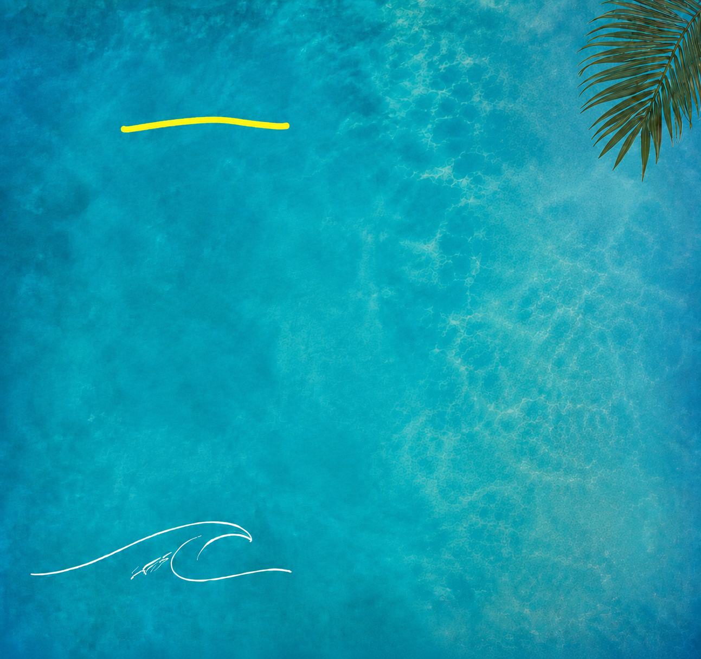
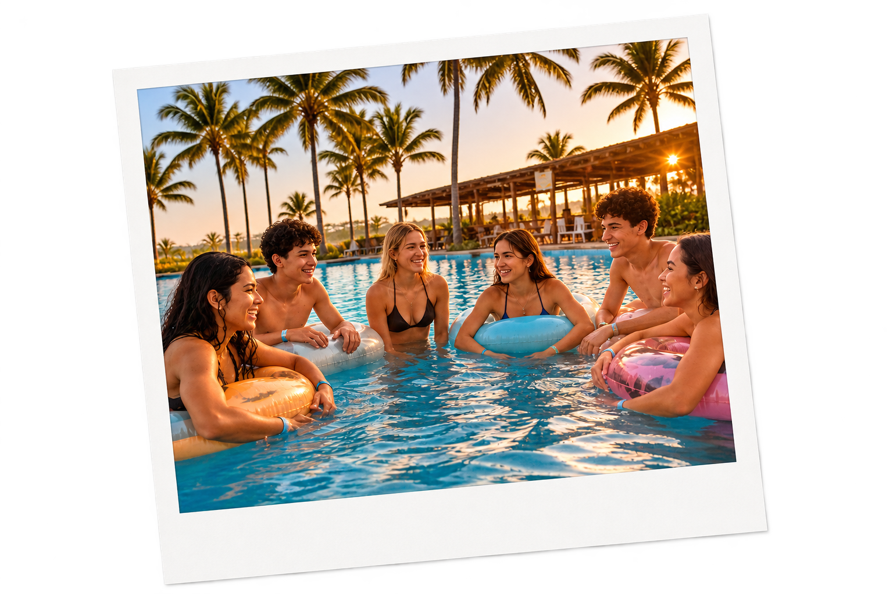
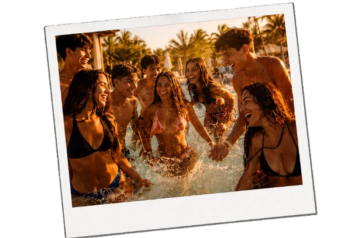
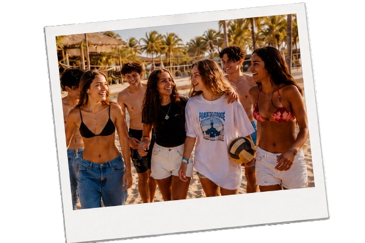

Quem Somos
O Clube da Maré Beach Club foi criado para proporcionar uma experiência única de lazer, diversão e bem-estar em um ambiente inspirado nas mais belas paisagens tropicais. Mais do que um simples espaço de entretenimento, o clube reúne atrações para todas as idades, combinando conforto, natureza e momentos inesquecíveis à beira-mar. Cada detalhe foi planejado para oferecer aos visitantes uma atmosfera acolhedora, onde é possível relaxar, praticar esportes, participar de atividades recreativas e aproveitar uma programação repleta de experiências especiais. Ao chegar ao Clube da Maré, os visitantes encontram uma estrutura completa, com áreas de convivência, espaços para descanso, ambientes gastronômicos e diversas atrações distribuídas por todo o complexo. As piscinas foram projetadas para atender diferentes perfis de público, desde aqueles que buscam tranquilidade até quem prefere atividades aquáticas e momentos de diversão em grupo. Os decks e lounges oferecem uma vista privilegiada do cenário tropical, criando o ambiente ideal para apreciar o pôr do sol ou simplesmente desfrutar da brisa do mar. Para os amantes de esportes e aventura, o clube disponibiliza quadras de areia, áreas para desafios recreativos e espaços destinados a competições amistosas. As atividades esportivas incentivam a integração entre os participantes, promovendo espírito de equipe, superação e muita diversão. Além disso, eventos temáticos e torneios especiais acontecem regularmente, tornando cada visita uma experiência diferente e cheia de novidades. O bem-estar também é uma prioridade dentro do Clube da Maré. Os visitantes podem aproveitar espaços dedicados ao relaxamento, meditação e reconexão com a natureza. Ambientes cuidadosamente planejados oferecem conforto e tranquilidade para quem deseja desacelerar a rotina e aproveitar momentos de paz em meio ao clima tropical. A combinação entre paisagens naturais, áreas verdes e serviços de qualidade cria uma experiência completa de descanso e renovação. A programação diária é outro destaque do clube. Durante todo o dia, diferentes atividades são realizadas para garantir entretenimento contínuo aos visitantes. Desde recepções animadas e gincanas até apresentações musicais, karaokês e cerimônias de premiação, cada momento é pensado para proporcionar interação e diversão. Essa variedade de atrações faz com que o Clube da Maré seja um destino ideal tanto para famílias quanto para grupos de amigos. Com uma estrutura moderna, ambiente acolhedor e inúmeras opções de lazer, o Clube da Maré Beach Club se destaca como um destino completo para quem busca experiências memoráveis. Seja para relaxar, praticar esportes, participar de eventos ou simplesmente aproveitar a beleza do litoral, o clube oferece tudo o que é necessário para transformar cada visita em um momento especial e inesquecível.


